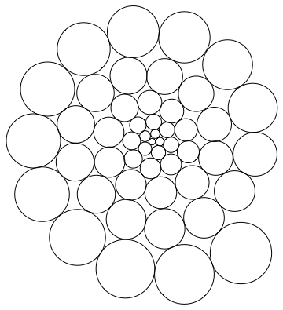
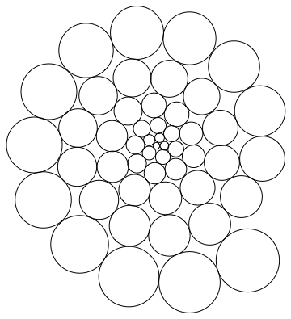

Les 15
Namespace
Het maken van nieuwe SVG (elementen) met javascript
Als je SVG in javascript wilt creeren vanaf scratch, dan zul je zien dat dit niet (in alle browsers) zomaar werkt.
var svg=document.createElement("svg");
document.body.appendChild(svg);
var circle=document.createElement("circle");
circle.setAttribute("cx","50");
circle.setAttribute("cy","50");
circle.setAttribute("r","50");
svg.appendChild(circle);
Bovenstaande code maakt in Chrome, bijvoorbeeld, keurig de gewenste code:
<svg><circle cx="50" cy="50" r="50"></circle></svg>
Maar je ziet deze ALLEEN als je hem inspecteert.. Wat gebeurt hier?
Namespace to the rescue
Het komt, omdat een SVG een name-spaced domElement is. (Een DOM2 Element, ipv een normaal DOM1 element)
Dit betekent, dat je als je een SVG maakt, moet aangeven, welke namespace gebruikt moet worden.
Anders kiest je browser een default (dat zou ff fijn zijn) of doen HELEMAAL NIKS.
Gelukkig hebben we naast
document.createElementNS() Deze documentatie geeft aan, dat we voor XML elementen de namespace moeten aangeven, alvorens we iets kunnen creeeren.
Gelukkig hebben we naast
document.createElement() ook document.createElementNS() en NEE, dat heeft niks met Netscape te maken. NS staat voor NameSpace!
document.createElementNS() Deze documentatie geeft aan, dat we voor XML elementen de namespace moeten aangeven, alvorens we iets kunnen creeeren.
OPDRACHT
Kijk naar het menu van deze site. In js/navigation.js maak ik een aantal elementen in SVG.
Zoek uit hoe dit werkt en kaap de relevante code (createNSNode()) om zelf ook makkelijk namespaced SVG objecten te maken.
Maak een script, dat het volgende doet:
Zet 533 cirkels in een spiraal in een SVG. Je mag ze vergroten om het volgende te krijgen.

Lastig?
Mathematic discussie over cirkel spiralen
Zoek uit hoe dit werkt en kaap de relevante code (createNSNode()) om zelf ook makkelijk namespaced SVG objecten te maken.
Maak een script, dat het volgende doet:
Zet 533 cirkels in een spiraal in een SVG. Je mag ze vergroten om het volgende te krijgen.

Lastig?
Mathematic discussie over cirkel spiralen